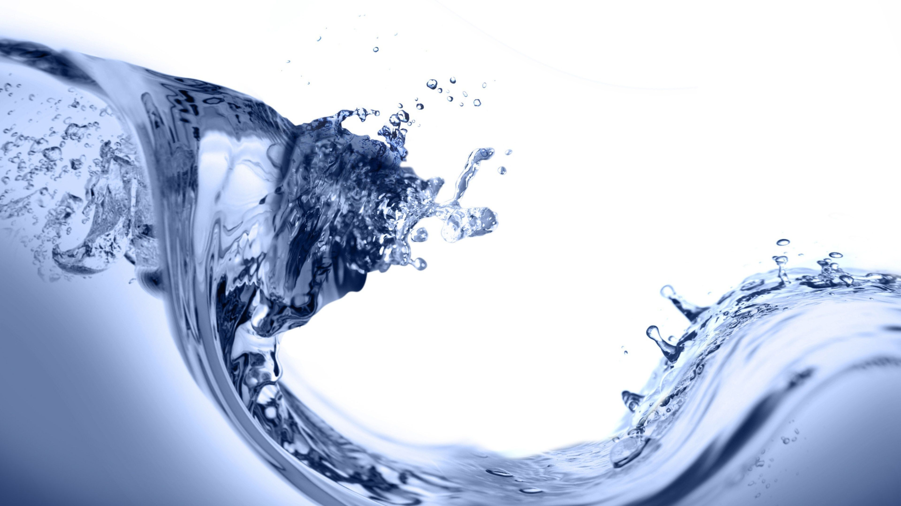

Water is one of the most important resources
on Earth. It supports almost every aspect of human life,
from drinking and cooking to agriculture, sanitation and industrial
production. Despite its importance, millions of people around the
world still struggle to access clean and safe drinking water.
As the world's population continues to grow, the demand for clean water increases. Pollution, climate change and poor waste management have made it more difficult for some communities to maintain a reliable water supply.
Why Clean Water Matters
The Growing Problem of Water Pollution

One of the biggest threats to clean water is pollution.
Industrial waste, plastic materials, sewage and harmful
chemicals often find their way into rivers, lakes and other
water sources.In many communities, people depend on these
polluted sources for their daily needs because safer alternatives
are unavailable or too expensive. Water pollution also affects aquatic
ecosystems. Fish, plants and other organisms depend on healthy
water environments to survive. When these environments become
contaminated, entire ecosystems can suffer.
Clean water plays an essential role in maintaining good health.
It helps the body regulate temperature, transport nutrients and remove waste. Access to safe
drinking water also reduces the spread of waterborne diseases such as cholera and typhoid fever.
Beyond personal health, clean water is necessary for
education and economic development. Schools need
safe water for students and teachers,
while hospitals depend on it to maintain hygiene and provide proper medical care.
How We Can Protect Our Water
Protecting water resources does not always require complicated solutions.
Simple actions such as disposing of waste properly, reducing plastic pollution, repairing
leaking taps and avoiding unnecessary water wastage can make a meaningful difference.
Governments and organisations also have important responsibilities. Investing in water
treatment facilities, improving sanitation systems and educating communities about water
conservation can help ensure that more people have access to safe water.